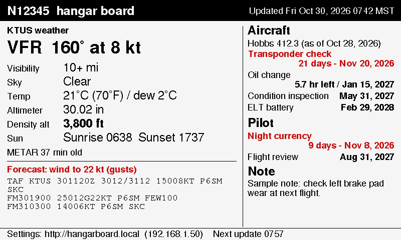
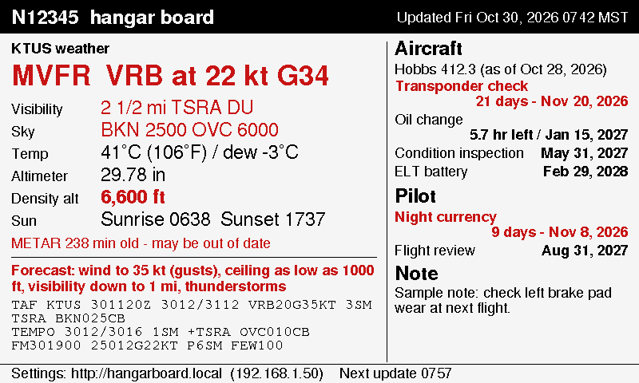

Hangar Board
A 7.5-inch e-paper status board for the hangar. It shows the airport's current weather and forecast, density altitude, sunrise and sunset, and when maintenance and pilot currency items come due. Anything out of limits turns red.

1. Install the software
- Plug the ESP32 board into your computer with a USB data cable.
- Use Chrome or Edge on a Windows, Mac or Linux computer. Phones and Safari can't do this step.
- Click the button below, choose the board's port (often "CP210x", "CH340" or "USB JTAG/serial") and click Install Hangar Board.
Takes about a minute. If the board isn't found, hold its BOOT button while clicking Connect. If the port isn't listed at all, the computer may need the USB driver for the board's chip (Silicon Labs CP210x or WCH CH340).
2. Connect the display
Choose your wiring on the board's settings page later. These are the two built-in options; anything else can be entered as custom pins.
| Display pin | ESP32 dev board (standard) | ESP32-S3 dev board (standard) | Waveshare ESP32 e-Paper Driver Board |
|---|---|---|---|
| BUSY | GPIO 4 | GPIO 7 | Already wired on the board; plug the display ribbon into it |
| RST | GPIO 16 | GPIO 8 | |
| DC | GPIO 17 | GPIO 9 | |
| CS | GPIO 5 | GPIO 10 | |
| CLK (SCK) | GPIO 18 | GPIO 12 | |
| DIN (MOSI) | GPIO 23 | GPIO 11 | |
| VCC / GND | 3.3 V / GND | USB power | |
The Good Display panels are bare ribbon-cable screens. They need a small adapter board between the ribbon and the ESP32, such as Good Display's DESPI-C02. The Waveshare 7.5" display usually comes with its own adapter (HAT). Power the display from 3.3 V, not 5 V.
3. Set up Wi-Fi
- Power the board. If it can't find a saved network, the screen shows setup steps.
- On your phone, join the Wi-Fi network HangarBoard-Setup. A setup page opens. If it doesn't, browse to
192.168.4.1. - Tap Configure WiFi, pick the hangar network, and type its password. The password stays on the board and is never sent anywhere else.
The screen stays blank or garbled? The board doesn't know which display or wiring you have yet. The default is the Good Display GDEY075Z08 (red) on standard ESP32 wiring. Once Wi-Fi is set up, open the settings page and choose the right display and wiring.
4. Settings page
On any phone or computer on the hangar Wi-Fi, open http://hangarboard.local. The board's own address is also printed at the bottom of the screen. There you can:
- load due items from your maintenance database: tap the file button, pick
Maintenance Record_be.accdbfrom the Files app's Dropbox folder, check the preview, and tap Use these items. It reads the Recurring Maintenance and Service Bulletin tables plus the latest Hobbs, and never changes the file. Items you added yourself, like pilot currency, are kept, - enter the current Hobbs time after each flight,
- add or edit due items by date, Hobbs hours, or whichever comes first, with a warning window (inside it, items turn red),
- leave a note,
- change the airport, time zone, update interval, density altitude warning, display type and wiring,
- import or back up all settings as text.
What turns red
| Item | Red when |
|---|---|
| Flight category | Anything other than VFR |
| Wind | 20 knots or more, sustained or gusting |
| Visibility / sky | Under 5 miles / ceiling under 3,000 ft |
| Density altitude | Above your warning setting (default 5,000 ft) |
| Weather report | Older than 90 minutes, or the update failed |
| Forecast (TAF) | Any period with wind 20+ kt, ceiling under 3,000 ft, visibility under 5 miles, thunderstorms, fog or dust |
| Due items | Inside the warning window, or overdue |
On black-and-white displays the same items get a ⚠ marker instead.

Weather comes from the National Weather Service Aviation Weather Center (aviationweather.gov) and is refreshed every 15 minutes by default. It's for situational awareness only: always get an official briefing before flight. Source code is in the HangarBoard folder of this repository.